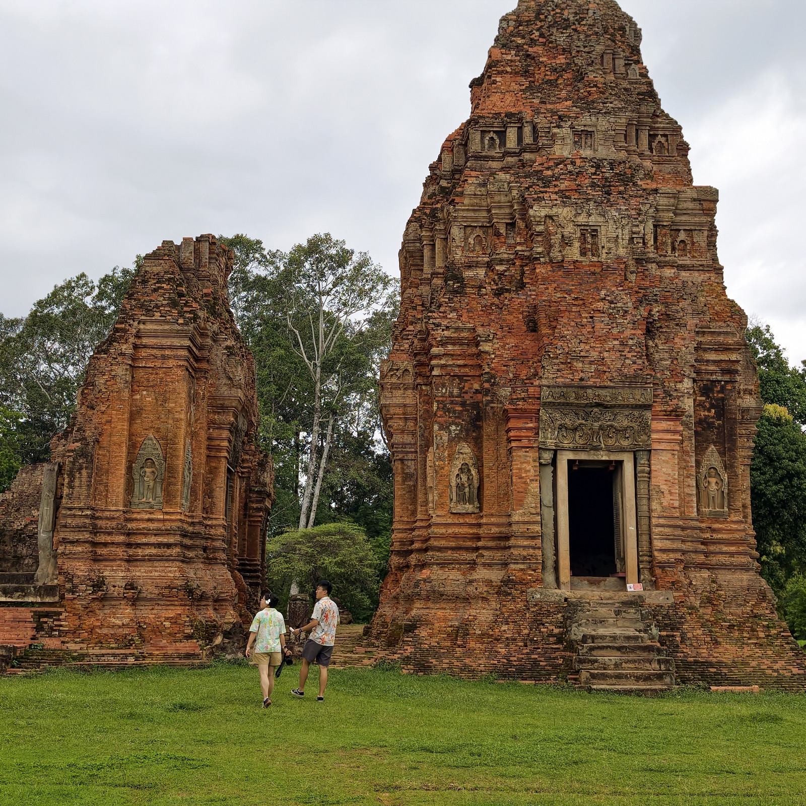
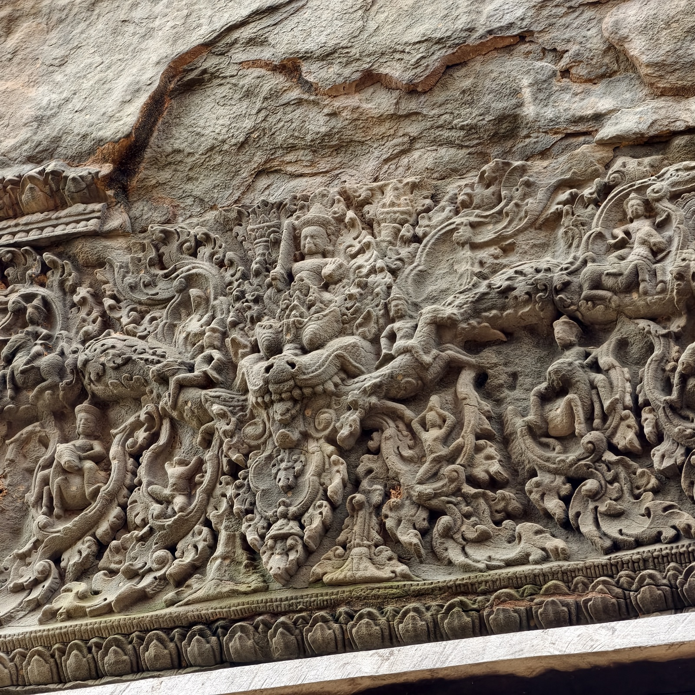
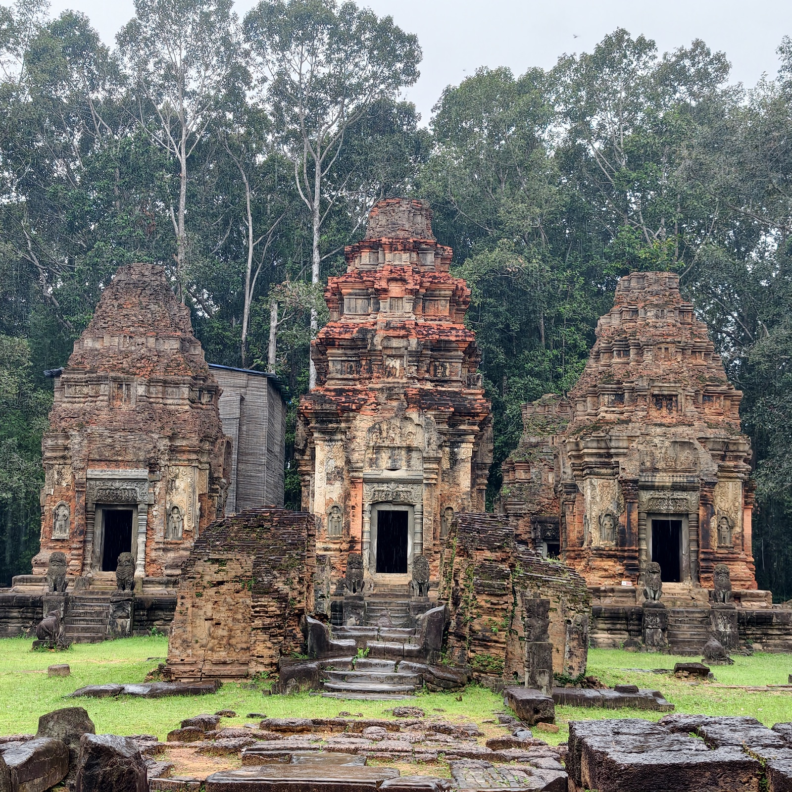
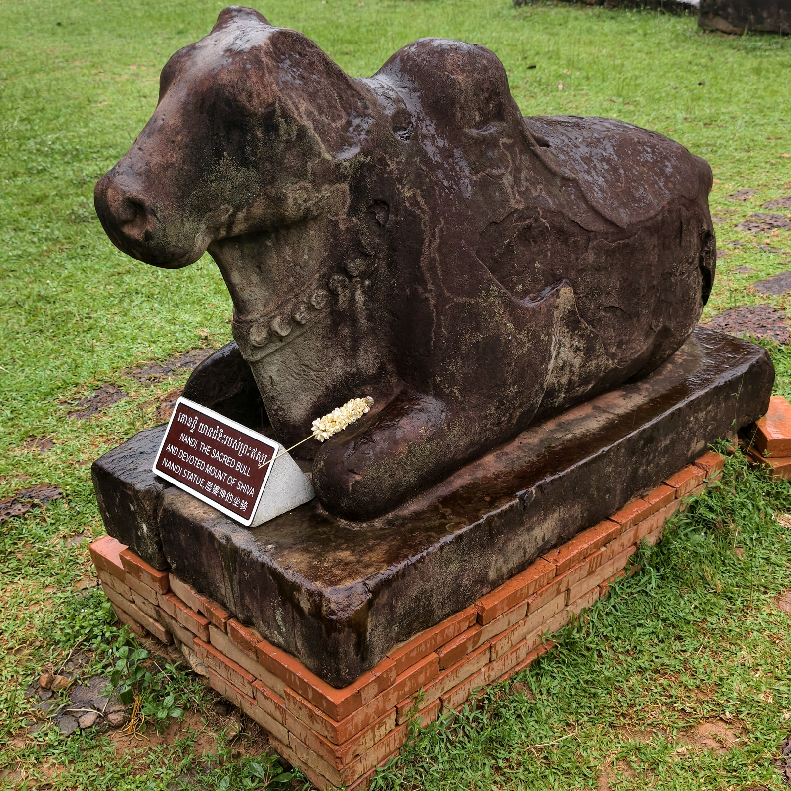
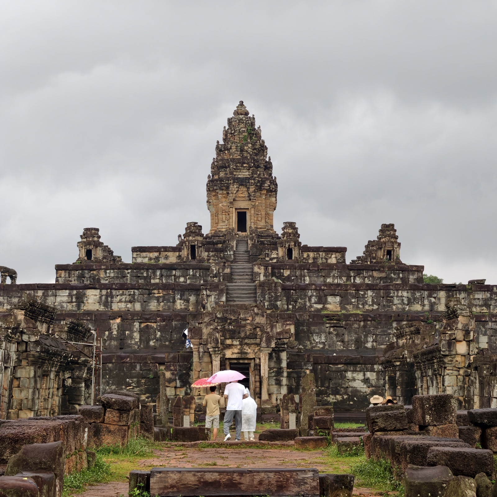

罗洛士遗址
在吴哥成为吴哥之前，高棉的都城先在这里。九世纪的诃里诃罗洛耶平原是帝国的中心，直到耶输跋摩一世迁都巴肯山。如今这里叫罗洛士遗址群，留下三座最早的标志性寺庙：神牛寺、巴孔寺、洛雷寺。
洛雷寺


遗址旁边立着几座现代庙宇，是早年遗址还没被保护起来时建的，至今管着当地人的丧葬。陈老师说，有一次她带团来，看见庙旁还陈列着一位往生者的遗体。
神牛寺


巴孔寺

这一天是十五天亡灵节的第一天，全寺都是节日的音乐，伴着雨声，有些空灵。我们一路登上中央塔，陈老师带我们绕塔三周祈福。塔心供着一棵金菩提树，往下走的时候，她开始讲它的来历。
她讲的故事很长，一直到上了车都没讲完。
从前柬埔寨乡下有个小女孩，很小的时候，妈妈被父亲捕鱼时误杀了，所以人们都叫她「摩罗娜玛妲」，意思是「亡母的女儿」。父亲续娶之后，继母带着自己的女儿进了门，对摩罗娜玛妲百般虐待，重活脏活全让她干，还动辄打骂。
死去的妈妈放心不下女儿，灵魂转世成了一条大理石斑鱼，每天游到河边陪伴她、帮她干活。小女孩认出了妈妈，母女俩就这样重新团聚了。可继母起了疑心，跟踪到河边发现了这条鱼，于是装病，骗摩罗娜玛妲说只有吃河里的鱼才能痊愈。天真的女孩把鱼引到岸边，继母把鱼杀掉吃了。女孩只好把鱼骨埋在野外，坟上后来长出一棵金色的、会发光的树，风吹过时，树叶的声音像唱歌一样——那是妈妈的灵魂还在守护她。继母又来砍树毁树，可怎么也毁不掉。
转机出现在国王身上。国王打猎时发现了这棵神树，满朝的人都搬不动它，只有摩罗娜玛妲能让树跟着自己走。国王看出这姑娘有灵气，把她接进王宫，立为王后。
继母却不肯罢休。趁王后回娘家的时候，她设下陷阱，用滚烫的椰油把王后害死，再让自己那个和王后长相相似的女儿进宫冒名顶替。但摩罗娜玛妲死后又转世成一只八哥鸟，飞回王宫落在国王窗前，唱出只有他们两人才知道的往事。国王低头一看，鸟脚上还套着他当年亲手给王后戴上的金戒指，真相就此大白。假王后被处死，继母母女在逃亡路上死于毒蛇之口。八哥鸟恢复了摩罗娜玛妲的人形，带着儿子与国王团聚，从此再没人能拆散他们。
故事到此结束。柬埔寨人后来都不吃大理石斑鱼，因为他们相信那象征着母亲永不消逝的爱——生命可以被毁掉，但爱只会换一种形态，一世一世地回来。
不过陈老师讲的时候，完全没有最后这个大团圆。我们听到的版本，到小女孩和她妈妈不断转世、不断被追杀就停了。感觉很惨很惨。